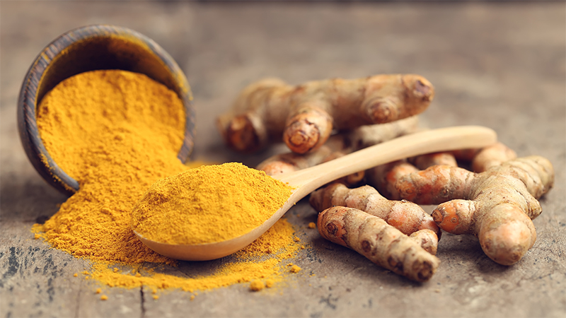
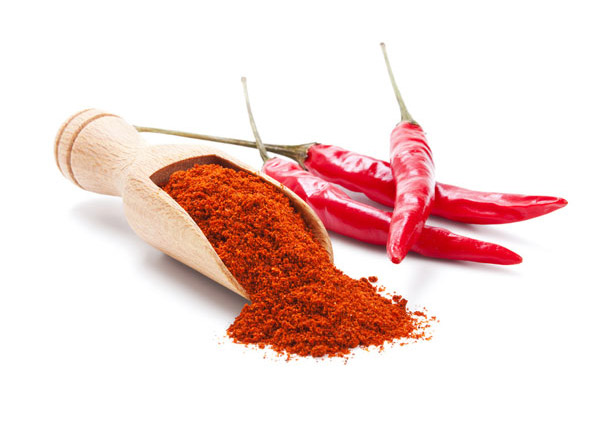
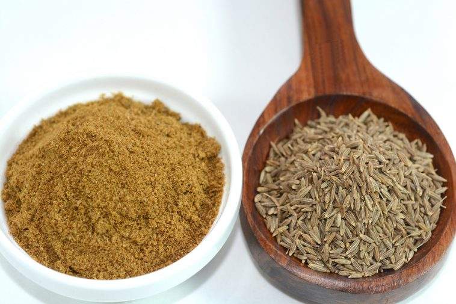
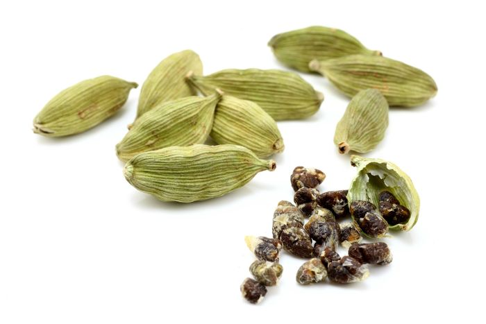

Catálogo de Especias
Explora nuestra colección de especias seleccionadas cuidadosamente de todos los rincones del planeta.

Cúrcuma
Originaria de la India. Ideal para currys y platos con un toque dorado y aromático.

Pimentón de La Vera
Ahumado y profundo, perfecto para guisos y embutidos tradicionales.

Comino
Muy usado en la cocina árabe y latinoamericana. Aporta un sabor terroso y potente.

Cardamomo
Fresco y cítrico, presente en infusiones, postres y currys del sudeste asiático.